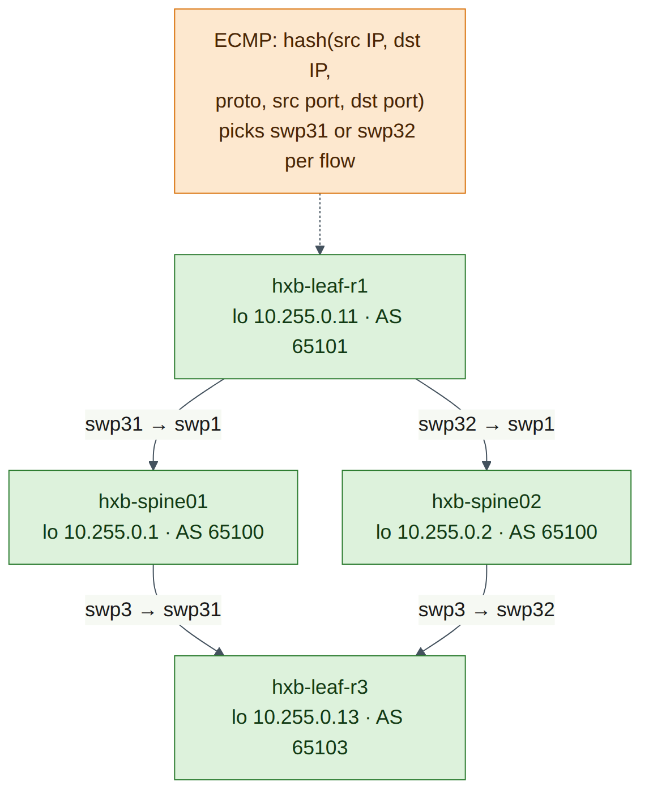
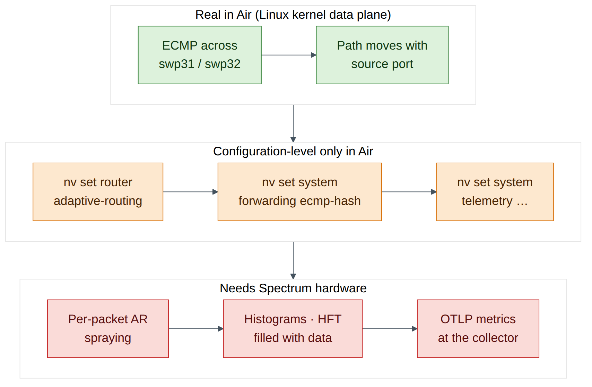
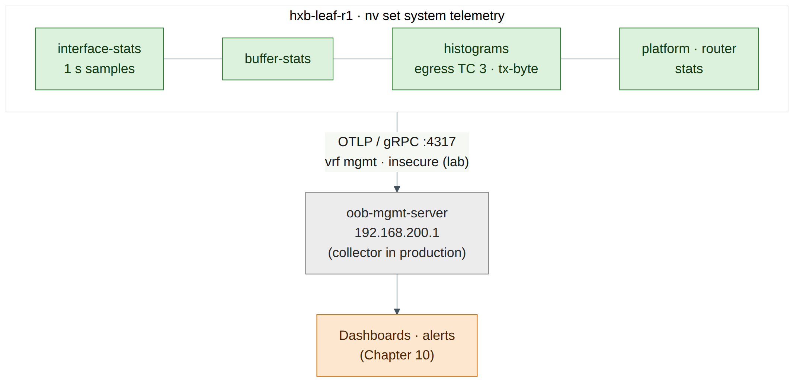

Lab 4 — Adaptive Routing, ECMP and Telemetry Configuration¶
Companion to the NCP-AIN Certification Guide
This free lab is part of the hands-on companion to NCP-AIN Certification Guide by Vakeesan Thevarajah (Cloudfoxy Ltd). The book explains the theory, design choices and hardware behaviour behind every step.
Lab at a glance¶
| Item | Detail |
|---|---|
| Book chapters | Chapter 6 (Adaptive routing, performance isolation and telemetry) · Chapter 10 (monitoring) · Chapter 2 (Clos fabrics and ECMP) |
| Exam objectives | 2.2 Enable QoS, ECN, PFC, adaptive routing and telemetry · supports 2.5 (diagnose congestion) |
| Time | About 60 minutes |
| Air resources used | hxb-leaf-r1 and hxb-leaf-r3 (configuration), hxb-spine01 and hxb-spine02 (path observation), oob-mgmt-server (jump host, telemetry destination) |
| Prerequisite labs | Lab 2 (eBGP unnumbered underlay with loopbacks advertised). Lab 3 is recommended but not required |
Objectives¶
By the end of this lab you will be able to:
- Enable adaptive routing (AR) globally and on each uplink with NVUE, and verify it, while being clear about what VX can and cannot do with it.
- Read and change the ECMP hash configuration (
nv show system forwarding, hash fields, hash seed) and know wherecl-ecmpcalcfits. - Observe ECMP path selection in the Air underlay by varying the source port of a probe and watching it move between the two spines.
- Configure OTLP telemetry export and interface, buffer and histogram statistics with the commands from Chapter 6.
- State, for each feature, whether Air gives you a configuration-level result or a data-plane result.
Background¶
Hash-based ECMP pins each flow to one path. For the few, huge, long-lived RoCE flows of AI training, that means collisions: two elephant flows share one uplink while another sits idle. Spectrum-X adaptive routing solves this by choosing the egress port per packet from live port load, and relies on the SuperNIC to put packets back in order at the receiver. On Cumulus Linux it is enabled globally with nv set router adaptive-routing state enabled and then per eligible Layer-3 uplink. AR applies to RoCEv2 unicast in the default VRF; everything else still uses ECMP hashing, which is why the hash settings still matter.
Telemetry is the other half of objective 2.2. Counters averaged over seconds hide microbursts, so Spectrum switches add histograms (distributions of queue occupancy, latency and counters), high-frequency telemetry (HFT, Spectrum-4) and OTLP export to an OpenTelemetry collector over gRPC.
This lab is honest about Air. NVIDIA's documentation lists Cumulus VX as not supported for adaptive routing, and histograms, HFT and OTLP export need Spectrum-2 or later (HFT needs Spectrum-4). On VX you can type, diff and in many cases apply the configuration, and read it back with nv show. You cannot see packets sprayed or histograms filled. ECMP, on the other hand, is real in Air: VX forwards in the Linux kernel, which load-shares across the two spines, so you can watch flows move between paths.

Step-by-step¶
Task 1 — Confirm the two equal-cost paths¶
-
Log in to hxb-leaf-r1 and check the route to hxb-leaf-r3's loopback.
ubuntu@oob-mgmt-server:~$ ssh cumulus@hxb-leaf-r1 cumulus@hxb-leaf-r1:mgmt:~$ nv show vrf default router rib ipv4 route 10.255.0.13/32 cumulus@hxb-leaf-r1:mgmt:~$ ip route show 10.255.0.13Expected output (illustrative):
Two next hops (IPv6 link-local, because the underlay is BGP unnumbered from Lab 2) means ECMP is in play.
Checkpoint
- The route to 10.255.0.13/32 has two next hops, one via swp31 and one via swp32.
Task 2 — Enable adaptive routing (configuration level)¶
-
Enable AR globally and on both uplinks. The book's Chapter 6 example uses
swp49-52; on helix-b-air the uplinks areswp31-32.cumulus@hxb-leaf-r1:mgmt:~$ nv set router adaptive-routing state enabled cumulus@hxb-leaf-r1:mgmt:~$ nv set interface swp31-32 router adaptive-routing state enabled cumulus@hxb-leaf-r1:mgmt:~$ nv config diffExpected output (illustrative):
-
Try to apply.
Version note
NVIDIA documents adaptive routing as supported on Spectrum-4 at 200G and 400G, and not supported on Cumulus VX. Depending on your release, VX either accepts the configuration (and
nv showdisplays it with no data-plane effect) or rejects the apply with a platform error (check on your release). If apply fails, record the message, runnv config detachto discard the pending change, and complete step 3 usingnv config diffas your evidence of correct intent. -
Verify.
cumulus@hxb-leaf-r1:mgmt:~$ nv show router adaptive-routing cumulus@hxb-leaf-r1:mgmt:~$ nv show interface swp31 router adaptive-routing cumulus@hxb-leaf-r1:mgmt:~$ nv show interface swp32 router adaptive-routingExpected output (illustrative):
-
Look at the one AR tunable Chapter 6 covers: the link-utilisation threshold (default 70%). Do not change it in this lab; just read the syntax.
-
Repeat steps 1–3 on hxb-leaf-r3 so that both ends of the path under study carry the same intent.

Checkpoint
nv config diff(ornv show router adaptive-routing) shows AR enabled globally and on swp31 and swp32, on both hxb-leaf-r1 and hxb-leaf-r3.- You can explain why AR still needs per-interface enablement after the global command.
Task 3 — Inspect and tune ECMP hashing¶
-
Read the forwarding and hash settings.
cumulus@hxb-leaf-r1:mgmt:~$ nv show system forwarding cumulus@hxb-leaf-r1:mgmt:~$ nv show system forwarding ecmp-hashExpected output (illustrative):
-
Set a unique hash seed on this leaf. Chapter 6 explains why: identical seeds on every tier make leaf and spine take correlated decisions (polarisation).
cumulus@hxb-leaf-r1:mgmt:~$ nv set system forwarding hash-seed 50 cumulus@hxb-leaf-r1:mgmt:~$ nv config diff cumulus@hxb-leaf-r1:mgmt:~$ nv config apply -y cumulus@hxb-leaf-r1:mgmt:~$ nv show system forwarding | grep -i seedWarning
On Spectrum hardware these settings program the ASIC hash, through
switchd. On VX there is no ASIC, so they do not change how the Linux kernel hashes the traffic you observe in Task 4. The kernel's own policy is controlled bynet.ipv4.fib_multipath_hash_policy. Keep that distinction clear. -
Try the path calculator.
cumulus@hxb-leaf-r1:mgmt:~$ sudo cl-ecmpcalc -i swp1 -s 10.255.0.11 -d 10.255.0.13 -p udp --sport 49152 --dport 4791Expected output: On Spectrum hardware,
cl-ecmpcalcprints the egress interface the ASIC hash would choose for that flow. On VX it is either absent or fails because there is no ASIC to query (check on your release). Record which one you see. The book's form of the command, with every field (interface, source, destination, protocol, ports) supplied, is what matters for the exam.
Checkpoint
- You can list the ECMP hash fields and name the commands that remove L4 ports from the hash (
nv set system forwarding ecmp-hash source-port off/destination-port off) and set the seed. - You know which tool predicts a flow's path on hardware.
Task 4 — Watch ECMP move flows between spines¶
On VX the kernel does the forwarding, so you can see real ECMP decisions. Your shell on a Cumulus switch runs in the management VRF (note :mgmt: in the prompt), so run underlay tests in the default VRF with ip vrf exec default.
-
Check that the kernel includes Layer-4 ports in its multipath hash.
Expected output:
net.ipv4.fib_multipath_hash_policy = 1(L3 + L4). If it shows0(L3 only), every flow between the same two loopbacks takes the same path. Set it to 1 for this lab only:sudo sysctl -w net.ipv4.fib_multipath_hash_policy=1(it reverts on reboot). -
Ask the kernel which next hop it would use for several flows that differ only by source port. The destination port is 4791, as for RoCEv2.
cumulus@hxb-leaf-r1:mgmt:~$ for sp in 49152 49153 49154 49155 49156 49157; do > echo -n "sport $sp: " > ip route get 10.255.0.13 from 10.255.0.11 ipproto udp sport $sp dport 4791 | grep -o 'dev swp3[12]' > doneExpected output (illustrative):
-
Confirm with real probes.
traceroute -Usends UDP to one fixed destination port (instead of incrementing it per probe), and--sportfixes the source port, so each run is one "flow".cumulus@hxb-leaf-r1:mgmt:~$ for sp in 49152 49153 49154 49155; do > sudo ip vrf exec default traceroute -n -q 1 -U -p 4791 --sport=$sp -s 10.255.0.11 10.255.0.13 | tail -2 > doneExpected output (illustrative):
Hop 1 is the spine's loopback (unnumbered interfaces borrow it), so 10.255.0.1 means hxb-spine01 and 10.255.0.2 means hxb-spine02. Different source ports, different spines: that is per-flow ECMP. Every probe of one run takes the same path, because the 5-tuple does not change. That is exactly why a single elephant RoCE flow can never use more than one uplink under ECMP.
Field note
If traceroute is not installed or does not recognise --sport, use step 2 alone: ip route get with sport/dport shows the kernel's decision directly (check on your release).
-
Now remove the source port from the kernel hash and repeat step 2. With
fib_multipath_hash_policy=0, all six flows pick the same uplink. Put the value back afterwards.
This is the kernel equivalent of nv set system forwarding ecmp-hash source-port off on hardware: fewer hash fields, less entropy, more collisions.
Checkpoint
- Different source ports map to different uplinks (swp31/swp32) and different first-hop spines.
- Without L4 fields in the hash, all flows between the same two addresses take one path.
Task 5 — Configure telemetry: OTLP export, statistics and histograms¶
-
On the oob-mgmt-server, find its management address. It is the OTLP destination for this lab.
Expected output (illustrative):
inet 192.168.200.1/24 .... Use your own value in place of192.168.200.1below. -
On hxb-leaf-r1, enable telemetry and OTLP export over the management VRF (the Chapter 6 command set).
cumulus@hxb-leaf-r1:mgmt:~$ nv set system telemetry state enabled cumulus@hxb-leaf-r1:mgmt:~$ nv set system telemetry export otlp state enabled cumulus@hxb-leaf-r1:mgmt:~$ nv set system telemetry export otlp grpc destination 192.168.200.1 port 4317 cumulus@hxb-leaf-r1:mgmt:~$ nv set system telemetry export otlp grpc insecure enabled cumulus@hxb-leaf-r1:mgmt:~$ nv set system telemetry export vrf mgmt cumulus@hxb-leaf-r1:mgmt:~$ nv set system telemetry interface-stats export state enabled cumulus@hxb-leaf-r1:mgmt:~$ nv set system telemetry interface-stats sample-interval 1 cumulus@hxb-leaf-r1:mgmt:~$ nv set system telemetry buffer-stats export state enabled cumulus@hxb-leaf-r1:mgmt:~$ nv set system telemetry histogram export state enabled cumulus@hxb-leaf-r1:mgmt:~$ nv set system telemetry platform-stats export state enabled cumulus@hxb-leaf-r1:mgmt:~$ nv set system telemetry router export state enabledWarning
insecure enabledsends telemetry without TLS. It is for the lab only. In production, install the collector's CA certificate withnv set system telemetry export otlp grpc certificate <ca-certificate>. -
Add histograms for the RoCE queue. An egress-buffer histogram on traffic class 3 answers "how often does the lossless queue go above X?". Add it on the server-facing and uplink ports, together with a counter histogram on the uplinks.
cumulus@hxb-leaf-r1:mgmt:~$ nv set system telemetry histogram egress-buffer bin-min-boundary 960 cumulus@hxb-leaf-r1:mgmt:~$ nv set system telemetry histogram egress-buffer histogram-size 12288 cumulus@hxb-leaf-r1:mgmt:~$ nv set system telemetry histogram egress-buffer sample-interval 1024 cumulus@hxb-leaf-r1:mgmt:~$ nv set interface swp1-2,swp31-32 telemetry histogram egress-buffer traffic-class 3 cumulus@hxb-leaf-r1:mgmt:~$ nv set interface swp31-32 telemetry histogram counter counter-type tx-byte cumulus@hxb-leaf-r1:mgmt:~$ nv config diff cumulus@hxb-leaf-r1:mgmt:~$ nv config apply -yVersion note
OTLP export, buffer statistics and histograms need a Spectrum-2 or later ASIC (egress-buffer histograms Spectrum-1 and later), and HFT needs Spectrum-4. On VX, apply may succeed with no data produced, or be rejected for unsupported objects (check on your release). If it is rejected,
nv config detach, then re-enter the commands without the objects named in the error and keep a note of which ones VX refused. -
Read the configuration back.
cumulus@hxb-leaf-r1:mgmt:~$ nv show system telemetry cumulus@hxb-leaf-r1:mgmt:~$ nv show system telemetry export cumulus@hxb-leaf-r1:mgmt:~$ nv show system telemetry histogram cumulus@hxb-leaf-r1:mgmt:~$ nv show system telemetry histogram interface cumulus@hxb-leaf-r1:mgmt:~$ nv show interface swp31 telemetry histogram egress-buffer traffic-class 3Expected output (illustrative):
exportshows OTLPenabled, destination 192.168.200.1 port 4317, VRFmgmt.histogram interfacelists swp1, swp2, swp31 and swp32. On hardware, the per-interface histogram view shows bins with sample counts. On VX expect the configuration and empty or missing bins. -
Optional: see whether the leaf tries to reach the collector. There is no collector running, so any connection is refused, but the attempt shows the export path and VRF are right.
Expected output: SYN packets from hxb-leaf-r1's management address to port 4317, answered by RST, if the VX build starts the exporter at all. No packets is also a valid VX result: record it.
-
For reference, the HFT block from Chapter 6. Type it into
nv config diffonly if you want to see how NVUE renders it, then detach; HFT needs Spectrum-4.nv set system telemetry hft sample-interval-usec 1000 nv set system telemetry hft counter tc-occupancy nv set system telemetry hft egress-buffer traffic-class 3 nv set interface swp31-32 telemetry hft state enabled nv set system telemetry hft duration 120 nv set system telemetry hft export state enabled

Checkpoint
nv show system telemetry exportshows the OTLP destination, port and VRF you set, or you have a recorded note of what VX refused.- You can name the four telemetry layers in Chapter 6 (counters, histograms, HFT, OTLP) and the ASIC generation each needs.
Verify¶
- The route to 10.255.0.13/32 has two next hops on hxb-leaf-r1.
- AR intent (global and swp31–32) is visible in
nv show router adaptive-routingor innv config diff, on hxb-leaf-r1 and hxb-leaf-r3. -
nv show system forwardingshows your hash seed and the hash fields. -
ip route get … sport <n>ortraceroute --sportshows different flows taking different spines. - Telemetry export and TC 3 histograms are configured on hxb-leaf-r1 (or you recorded exactly which objects VX refused).
- You can say, for AR, ECMP, histograms and OTLP, which part Air proved and which part needs hardware.
Break and fix¶
Fault 1 — AR enabled on only one uplink¶
This is the Chapter 6 troubleshooting scenario in miniature.
Inject. On hxb-leaf-r1, disable AR on swp32 as if a typo had left it out of the range.
cumulus@hxb-leaf-r1:mgmt:~$ nv set interface swp32 router adaptive-routing state disabled
cumulus@hxb-leaf-r1:mgmt:~$ nv config apply -y
Symptoms. On hardware, RoCE traffic that the leaf sends out of swp32 is still placed by ECMP hash, so uplink utilisation is uneven and ECN marks appear on one uplink only, even though "AR is enabled".
Diagnosis. Check the global state, then every uplink. Use JSON when you script this across many leaves.
cumulus@hxb-leaf-r1:mgmt:~$ nv show router adaptive-routing
cumulus@hxb-leaf-r1:mgmt:~$ for i in swp31 swp32; do echo -n "$i: "; nv show interface $i router adaptive-routing -o json | grep -o '"state": *"[a-z]*"'; done
Expected output (illustrative):
Fix.
cumulus@hxb-leaf-r1:mgmt:~$ nv set interface swp31-32 router adaptive-routing state enabled
cumulus@hxb-leaf-r1:mgmt:~$ nv config apply -y
To stop it happening again, generate leaf configuration from a template (Lab 11) and check AR on every uplink automatically.
Fault 2 — No entropy in the hash¶
Inject. On hxb-leaf-r1, set the kernel policy to L3 only (standing in for ecmp-hash source-port off and destination-port off on hardware).
Symptoms. Re-run Task 4 step 2. All flows between 10.255.0.11 and 10.255.0.13 take the same uplink, whatever the source port.
Diagnosis. sysctl net.ipv4.fib_multipath_hash_policy shows 0. On hardware, nv show system forwarding ecmp-hash would show the port fields disabled.
Fix. sudo sysctl -w net.ipv4.fib_multipath_hash_policy=1, then re-run the loop and confirm both uplinks appear. On hardware: nv set system forwarding ecmp-hash source-port on and destination-port on, then apply.
Clean-up / save state¶
-
Decide what to keep. The AR and telemetry configuration is harmless on VX and matches the Helix-B design, so keep it if it applied cleanly. If VX rejected any object, make sure nothing is left pending.
-
If you prefer a clean baseline for Lab 5, remove the telemetry objects (keep AR and the hash seed).
-
Confirm the kernel hash policy is back to
1, then save on every switch you changed. -
Sleep the simulation from the Air UI if you are stopping here.
Exam tie-in¶
- 2.2 (AR):
nv set router adaptive-routing state enabled(global) andnv set interface <swp> router adaptive-routing state enabled(per uplink), verified withnv show router adaptive-routingandnv show interface <swp> router adaptive-routing. AR applies to RoCEv2 unicast on L3 uplinks in the default VRF, and needs SuperNIC reordering. - 2.2 (telemetry): OTLP export (
nv set system telemetry export otlp …, gRPC destination and port, VRF), statistics (interface-stats,buffer-stats,histogram,platform-stats,router), histograms per interface and TC, HFT for microbursts on Spectrum-4. - 2.2 and 2.5 (ECMP): ECMP is per flow. Hash fields,
hash-seedandcl-ecmpcalcstill matter for non-RoCE traffic and for any RoCE traffic AR doesn't handle. - Exam trap: AR is not "a better hash". It does not hash RoCE at all; it chooses per packet by load.
Review questions¶
- After
nv set router adaptive-routing state enabledandnv config apply, RoCE on uplink swp32 is still placed by hash. What was missed? - Why does changing
nv set system forwarding hash-seedon VX not change the paths you observed withip route get? - Four
tracerouteruns with different--sportvalues show first hops 10.255.0.1, 10.255.0.2, 10.255.0.2, 10.255.0.1. What does this show, and why does each individual run stay on one spine? - Which NVUE settings stream interface statistics to an OpenTelemetry collector at 10.10.0.50 over the management VRF?
- A 1-second interface average shows 30% utilisation on a leaf uplink, yet ECN marks keep appearing. Which telemetry feature would show why, and on which ASIC generation?
Answers¶
- Per-interface enablement:
nv set interface swp32 router adaptive-routing state enabled(usually for all uplinks, e.g.swp31-32), then apply. The global command alone does not enable AR on any port. - On VX there is no ASIC. The NVUE ECMP settings program the Spectrum hash through
switchd, while VX forwards in the Linux kernel, whose hash is governed bynet.ipv4.fib_multipath_hash_policy. - It shows per-flow ECMP across the two spines: the source port is part of the hash, so different flows take different paths. Within one run the 5-tuple is constant (
-U -p 4791 --sport=<n>), so every probe hashes to the same next hop. nv set system telemetry export otlp state enabled,nv set system telemetry export otlp grpc destination 10.10.0.50 port 4317,nv set system telemetry export vrf mgmt,nv set system telemetry interface-stats export state enabled(plus a certificate, orinsecure enabledin a lab), thennv config apply.- High-frequency telemetry (HFT), sampling
tc-occupancyandtx-byteat sub-millisecond intervals, reveals the microbursts that the average hides. HFT needs Spectrum-4 or later and benefits from PTP time.
Go deeper
The matching book chapters cover the exam objectives for this lab in full, with a Q&A pack of about 40 exam-style questions per chapter.